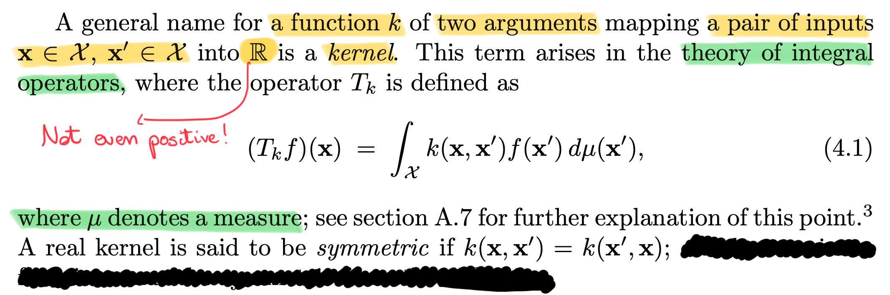

Frequently Asked Questions
Data Mining - CdL CLAMSES
Università degli Studi di Milano-Bicocca
Homepage
“The whole problem with the world is that fools and fanatics are always so certain of themselves, and wiser people so full of doubts.”
Bertrand Russell
This is not a normal unit and has a more dynamic nature.
I will collect here interesting questions made by students over the years.
The questions are organized by topic, but some overlap will occur.
Hopefully, this unit will form the basis of a statistical culture.
Indeed, it is based on the knowledge of several statisticians.
The modeling process
What to do when different estimators lead to dissimilar conclusions?
Well, it happens all the time in applied statistics. It even occurs in Statistics I!
For example, you might get slightly different values (or even opposite signs) when looking at the estimated regression coefficients \hat{\beta}_\text{ols}, \hat{\beta}_\text{pcr}, \hat{\beta}_\text{ridge}.
In linear models, do not assume the OLS estimator is “better” just because it is unbiased. Biased estimates are helpful if they lead to a (sufficiently high) reduction of the variance.
In any event, remember these are, indeed, estimates! By definition, there will be some variability; therefore, the discrepancies might be due to random fluctuations.
To choose among different estimates, we need a criterion (or a combination of criteria), such as the predictive performance. However, the out-of-sample error is not the only relevant aspect!
There might be other considerations to keep in mind, including the interpretability, the robustness of the method, and the computational complexity.
Whenever different estimates display some differences, try to see it as an opportunity to learn something from the data. What could be the reason for such a discrepancy? What tells us about the data we are analyzing?
How to interpret a wrong model?
First of all, by wrong, we mean “biased.” Therefore, being “wrong” could be an advantage if the focus is on pure predictions.
We can often say something about the association between the response variable and the covariates, i.e., we can still try to interpret the results.
Finding association is appropriate even in the presence of biased estimates, do not be discouraged by this aspect. However, you must be aware that the fitted model is, at best, an approximation of reality (especially the biased ones), therefore you need to be prudent in your conclusions.
The specific type of association reflects the assumptions implied by the chosen model. For example, linear models capture the linear part of the unknown and possibly more complex relationship f(x), but they cannot capture interactions (unless manually included).
At the very least, we can often say something about the main factors affecting the predictions.
Obviously, we must be very careful before making any causal statement. Remember that association \neq causation even when the model is well-specified.
Do not forget that the estimated effects should be interpreted as “ceteris paribus”! This means the association between a variable and the response is often expressed conditionally on the other variables’ effect.
Why do we care about simple models?
Simple models are helpful to explain reality, not just to make predictions.
Simple models \neq linear models. A tree with a few splits is indeed “simple.” Some might say that parametric models relying on well-chosen assumptions are simple, but it depends.
Simple models tend to be more robust, i.e., less affected by contamination and changes in the data generative process.
Besides, the understanding gained by fitting simple models is precious for estimating the more complex ones because it guides the next steps.
The modelling process is iterative and not a collection of independent and separate approaches. You fit a model, check the results, and adjust your strategy.
Another practical concern is that senior statisticians know hundreds of different techniques. When all these ingredients are combined, they generate thousands, if not millions, of competing estimates. Hence, it becomes impossible to “use them all and pick the best performer.” You need guidance to find the final answer.
What if simple models do not work well?
…for example, what to do when simple models do not predict well?
In that case, of course, it is time to move on and try something more sophisticated. This often occurs in practice; only a few case-study can be solved with simple tools.
However, you should not fit a sophisticated model without trying the simple ones first. In other terms, I would fit a deep neural network only after everything else has failed, as a last resort.
The statement “data are complicated, therefore I need a complex model” is probably the result of hype/over-excitement for the new shiny machine learning tool.
At the cost of being repetitive, especially when data are complex, you should first check whether a simple solution exists. Sometimes, this is the case because “simple” models tend to have low variance.
A skilled statistician is not somebody who runs thousands of sophisticated models seeking for the one with the lowest error (i.e., the button pressing culture). A skilled statistician is more like an artisan, who uses her/his tools when needed and with intelligence, obtaining accurate predictions because she/he has a good understanding of the data, not as the result of brutal trial and error.
Finally, even when it turns out that a complex model improves the predictive performance, always ask yourself: “Is it worth it?” The answer is often context-dependent.
Once again, there might be other considerations to keep in mind: interpretability, robustness, computational complexity.
Handling categorical variables
I have been told that linear models cannot use categorical variables
Let me present you dummy variables!
This question was not made during an M.Sc. level course such as Data Mining at CLAMSES (otherwise, it would have been a bit depressing), but it happened in other contexts.
In the test set, there are a few values that were not observed in the training, what should I do?
This often occurs when a categorical variable, say
city, takes multiple values, e.g.,Milan,Naples,Rome, etc. However, a rare value, such asIsernia, may be present in the training and not in the test.The same issue may arise during cross-validation or when splitting the data into training, validation, and test sets. You might be tempted to change the seed until you find a good split that does not display the issue. This practice is wrong; see below.
It might take forever to find a “good” seed. But then, if you keep sampling new splits until a specific condition is satisfied, you are implicitly inducing dependence across observations, breaking the primary rationale of cross-validation or training/test set.
It would be even worse to “manually” allocate units into each split because that would also break the primary assumption of cross-validation, i.e., the data should be independently sampled.
Fair enough, so what should we do? In general, it depends. As a general strategy: be creative, use your judgment.
Obviously, an option is to omit the variable at the explicit cost of losing information. However, for example, if the variable is binary, this is typically your only option. In this case, the discarded information is limited because the variable would be nearly constant.
Alternatively, you could merge the rare values with other categories. However, the aggregation criterion is crucial. You could merge rare categories into a residual class called
Other. Alternatively, you could use your judgment to make smarter choices (e.g., mergingIserniawithCampobasso, both in Molise).Other details: is it preferable to perform the merging before estimating the model (using all the observations for fitting it) or after the estimation procedure (based on a reduced dataset) when making the predictions? This is another instance of the bias-variance trade-off. Hence, there are no general answers.
The story does not end here. For instance, taking a Bayesian approach might be another principled possibility: prior information could be exploited to help the estimation, even without data points in the training.
Nonparametric regression
What is the definition of a “kernel”?
In our slides, we called any density function w(\cdot), symmetric around the origin, a “kernel”. Typically the density is also unimodal around the origin.
Depending on the book and the context, the definition of a kernel might be slightly different; here we are in agreement with the textbook Azzalini, A. and Scarpa, B. (2011), Data Analysis and Data Mining
and Wasserman, L. (2006), All of Nonparametric statistics
With that said, the word “kernel” has been used to indicate, more generally, a function that measures the discrepancy between two points, say \bm{x} and \bm{x}'.
For instance, the definition given in Rasmussen, C. E. and Williams, C. K. I. (2006), Gaussian Processes for Machine Learning is extremely general:
